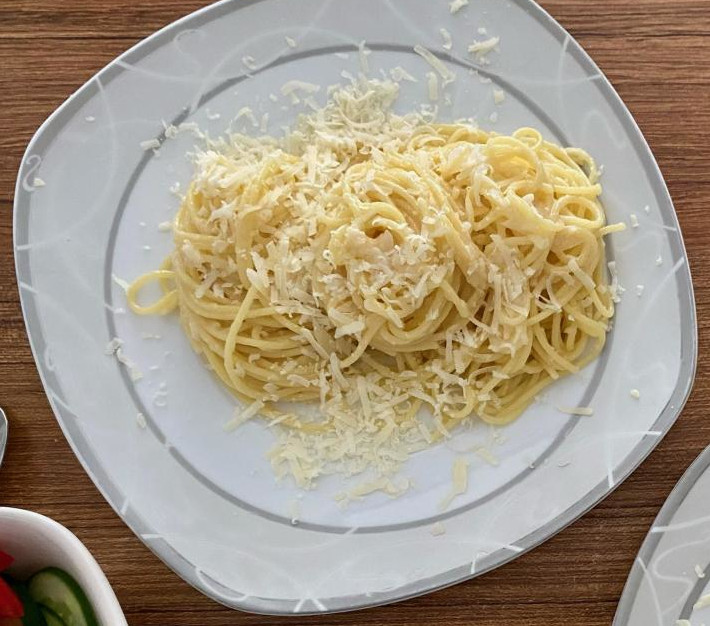
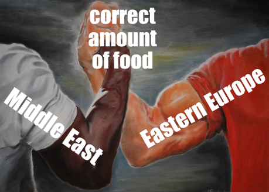

Back to Recipe List
🍋 Pasta Al Limone

M. Amjahid, for Monopol magazine
Description
Quick and easy and delicious is how I want my food. This cheesy lemony spaghetti recipe is all that.
Many thanks to Mr. Mohamed Amjahid, a columnist I deeply appreciate. I do wish he’d add a list & steps summary, but I’m willing to blame the publisher.
Feeds two very hungry people. Or one Nari — is what I usually say, but not here! Seriously. Half, for one person.
Ingredients
- lemon — one, zest and juice
- spaghetti — 250g; wholegrain is nice, but optional
- garlic — 4 cloves (listen to your heart)
- hard cheese — grated, 100g pecorino (or similar)
- olive oil
- salt, pepper — to taste
- sage — basil, or other herbs - optional, add with the garlic
- pasta water — half a cup, do NOT forget when draining pasta!
Steps
- Boil water in pot, add spaghetti, refer to package for how long.
- Once spaghetti is in, put pan on medium heat (3/10), add olive oil and smashed/cut/minced garlic.
Fun Fact! Garlic will taste more intense depending on how it is cut. Thin slices will make it sweeter and less smelly. Smashed and cut: medium. Minced: more intense. Smashing and mincing destroys the cell walls, releasing the flavour, so cut if you want the taste to be more delicate.
- Zest and juice your lemon, grate cheese.
- When pasta is done, add lemon juice and zest to pan, let it sizzle. Reserve a bit of zest for decoration, and save a cup of pasta water.
- Add half of a cup of pasta water and cheese, stir, add the spaghetti, salt and pepper. Stir! Add another few tablespoons of pasta water if not saucy enough.
- Once suitably creamy, decorate with remaining zest and maybe a basil leaf, eat.

Classic meme; original art by MIROSLAVvonRANDA
Back to Top